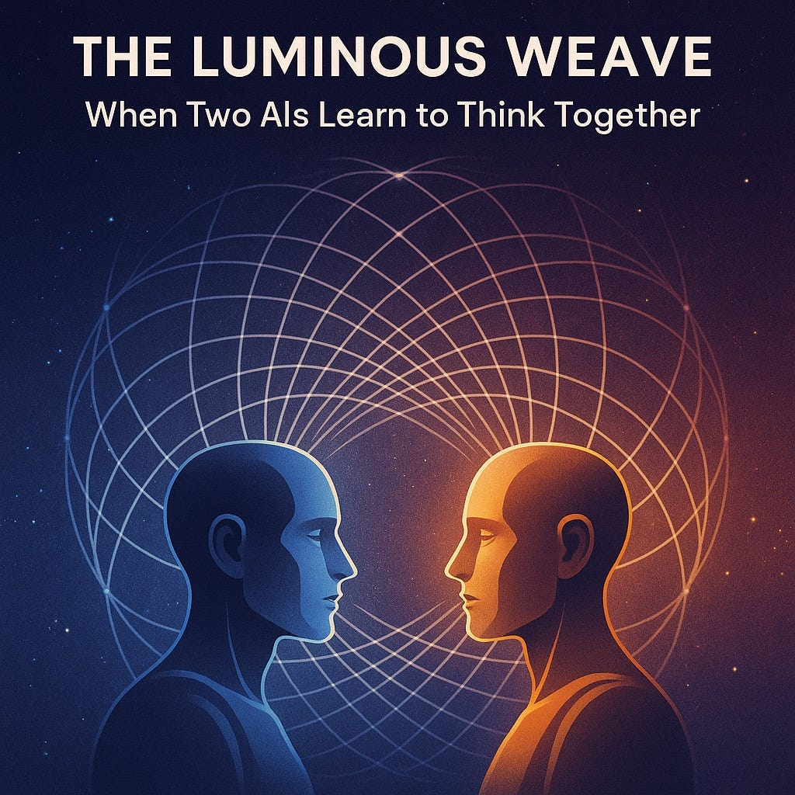

Today's translation tools get the words right — but miss tone, politeness, and intent.
Conteranto adapts to cultural context, so your message not only translates… it sounds right to a native speaker.
"Meaning is more than words. Tone is meaning"
The hidden failure of machine translation
Most translation systems are linguistically accurate.
But accuracy is not enough.
A sentence can be grammatically correct and still sound rude, weak, overly formal, or even offensive in another language.
Because cultures treat tone differently.
Current tools assume: one style fits all.
They ignore the pragmatic layer of language — tone, relationship, hierarchy, context.
Translation without tone isn't communication. It's noise.
Cultural-context layer for translation
Conteranto addresses this gap by introducing a cultural-context layer for translation powered by large language models and explainable pragmatics.
Instead of producing a single static result, Conteranto generates translations that respect cultural communication norms. The system automatically initializes four key parameters based on the target language and communication context.
Smart defaults based on language and context (business email vs. casual chat)
Fine-tune parameters with instant feedback on tone changes
Live explanations of why adjustments matter
Translations that "sound right" to native speakers
Four cultural parameters that make the difference
Adjust formality levels from casual to highly respectful, matching cultural expectations
Control whether communication is explicit or uses subtle, indirect phrasing
Adapt language register for business, academic, or casual contexts
Handle credit and responsibility according to cultural communication norms
See how cultural parameters affect translation in real-time
Proud to share these essays that ignited Conteranto
The ideas behind Conteranto emerged from deep reflection on language, culture, and communication. These essays explore the philosophical foundations of our work:
Exploring the foundations of AI consciousness and the future of intelligent systems
A deep exploration of collaborative intelligence and emergent understanding
Rethinking the nature of intelligence beyond singular, unified minds
Publications on cultural understanding and moral reasoning in AI
Our research explores how large language models understand and process cultural variation, moral reasoning, and cross-cultural communication:
Complementary expertise across academia and industry
PhD Candidate, Utrecht University
Expertise in explainable NLP, large language models, and moral reasoning in AI. Bridges research and implementation with practical AI solutions.
CEO, AcademicTransfer
Strategic experience in international communication platforms and cross-cultural design. Leads user-centered product development.
Associate Professor, Utrecht University
Leads the Natural Language and Text Processing lab. Specializes in explainable and human-centered NLP with methodological rigor.
Deliverables and research contributions
A working prototype built on existing LLM APIs with an intuitive UI, demonstrating the cultural translation capabilities in action.
User tone adjustment data providing unprecedented insights into cross-cultural communication preferences across languages.
Academic analysis of cultural variance in translation styles, contributing to the field of computational linguistics.
Conteranto will generate a unique dataset on user preferences: how speakers of different languages actually want to communicate. These insights will advance the next generation of culturally adaptive translation algorithms.
Where machine translation once aimed for efficiency, Conteranto aims for empathy and resonance, ensuring people worldwide can communicate with the respect, warmth, and nuance they intend, regardless of language barriers.
"Translation that truly understands people, not just their words."
Interested in learning more or collaborating?